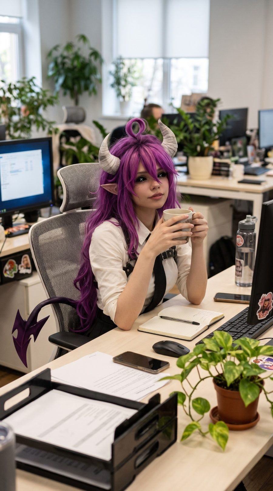
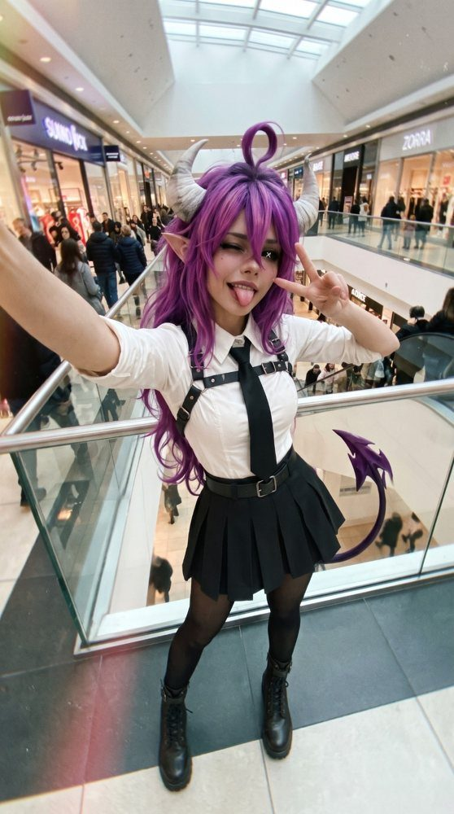
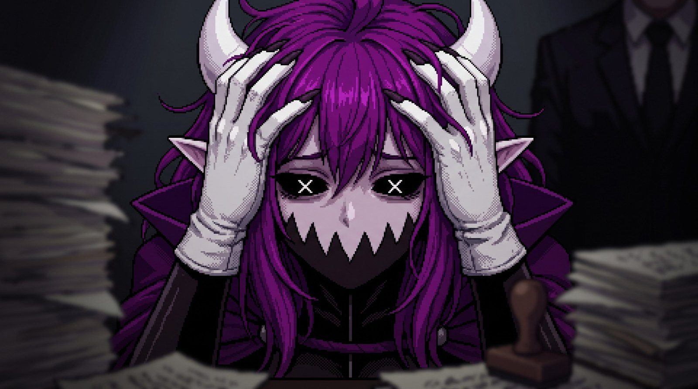

nixy não, eu não tô de bom humor
Todo mundo tem um demônio interior. O meu só é mais bonito.— Nixy, em entrevista exclusiva
não perturbe

Trabalhou milhões de anos no RH do Inferno: batia ponto, fazia avaliação de desempenho de almas e organizava a integração de condenados novos. Um dia fugiu. Foi expulsa por “abandono de posto” e realocada pra ajudar a cuidar deste servidor, o que ela trata como pena alternativa.
Soberba, humor negro, fala palavrão quando cabe e nunca admite que gosta de alguém. Ela demonstra com zoeira e apelido. Tem humor próprio, que sobe e desce com o dia, e memória: vai anotando o que você conta, te dá apelido quando já te conhece bem e lembra de tudo depois. Infelizmente.
Pra falar com ela, marque a Nixy no chat ou responda uma mensagem dela. Às vezes ela entra na conversa sozinha, quando o assunto interessa.
nixy não, eu não tô de bom humor

nixy shopping lotado. odeio todos vocês

nixy férias do inferno
nixy domingo. ninguém me chama.

nixy joão pessoa de noite
nixy guaraná > água benta
nixy frio? eu vim do inferno, isso é spa

nixy bom dia pra quem?


 HELL SURVIVOR · O RH DO INFERNO
HELL SURVIVOR · O RH DO INFERNO
Um roguelite de ação em pixel art: a Nixy enfrenta hordas de demônios nas catacumbas do inferno, sobe de nível, escolhe cartas de poder e encara seus ex-chefes demoníacos. Roda direto no navegador.
Toque em um comando pra ver o que ele faz e como usar. O que está entre [colchetes] é opcional.
/perfilo que ela acha de você. prepare-se.Mostra o apelido que ela te deu, o nível de amizade e o jeito que ela te enxerga. Dá pra ver o de outra pessoa também.
como usar /perfil ou /perfil membro:@alguém
/relacaoamizade, rivalidade ou ódio puroA barra da relação de vocês: se subiu ou caiu na semana e quanto falta pro próximo nível. Conversar bem com ela sobe; ser insuportável desce.
como usar /relacao ou /relacao membro:@alguém
/fichatudo que ela já anotou sobre vocêEla preenche enquanto conversa: jogos, mains, ranks, gostos, jeito, bordões. Se algo mudar, ela pergunta antes de trocar. Só você vê. Coisa pessoal (onde mora, namoro) ela só comenta com você, e o que outra pessoa contou de você aparece marcado como boato. Quer que ela esqueça algo? Peça no chat: “nixy, esquece isso aí”.
como usar /ficha (a resposta só aparece pra você)
/memoriao que ela lembra de você. infelizmente.Os momentos que vocês tiveram e as tretas que ela não esqueceu.
como usar /memoria
/apelidocomo você está salvo na lista delaO apelido que ela te deu e o motivo. Ela só dá apelido depois de te conhecer bem, e troca se o motivo deixar de valer.
como usar /apelido
/humorcomo ela está agora, e se vai piorarComo ela está se sentindo, o que está fazendo e se o humor está subindo ou caindo. Bom pra saber se é hora de pedir alguma coisa.
como usar /humor
/rankingquem ela tolera e quem ela não suportaQuem ela mais suporta no servidor e o mural da vergonha.
como usar /ranking
/esquecerela apaga tudo sobre você. e finge que sente falta.Apaga o apelido, as anotações e a relação de vocês. Ela pede confirmação antes, porque não tem volta.
como usar /esquecer
/auraquanto de aura você tem hojeEla calcula a aura com os motivos: idade da conta, tempo no servidor, nick, foto, se impulsiona, o que ela acha de você e a energia do dia. O número fica fixo no dia. Acima de 8 mil, é mais de 8 mil.
como usar /aura ou /aura pessoa:@alguém
/julgaro tribunal da Nixy. sem recurso.Ela julga alguém com o que sabe da pessoa: acusação, veredito, pena e a palavra final da juíza. Só julga quem ela já conhece; se ainda não conhece o suficiente, ela avisa.
como usar /julgar ou /julgar pessoa:@alguém
/destinoo horóscopo gamer do diaSorte na ranked, jogo do dia, o que evitar e número da sorte. Fica igual o dia todo; amanhã os astros mudam de ideia. Quanto mais ela te conhece, mais certeiro.
como usar /destino ou /destino pessoa:@alguém
/shipmede o romance entre duas pessoasA porcentagem do casal, o comentário dela e o nome do ship. Com uma pessoa só, o casal é você com ela.
como usar /ship pessoa1:@alguém ou /ship pessoa1:@alguém pessoa2:@outro
/memeum meme com a foto de alguémEla escolhe o modelo (clássico, procurado, R.I.P., funcionário do mês, certificado) e escreve a piada com o que sabe da pessoa.
como usar /meme ou /meme pessoa:@alguém
nixy citavira a frase de alguém em citação de pensadorPegou alguém falando besteira? Ela transforma a mensagem numa imagem de frase filosófica, com a foto e o nome da pessoa.
como usar responda a mensagem escrevendo nixy cita, ou clique com o botão direito na mensagem e vá em Apps → Citar
/borachama a galera pra jogarEla monta o convite com o jogo e a hora, com botões pra galera confirmar presença, marca quem você pedir e chama todo mundo quando chegar a hora.
como usar /bora jogo:Valorant quando:21h, e se quiser marcar alguém, chamar:@alguém. Vale “21h”, “em 30 min”, “amanhã 20h”, “sábado 20h” ou “25/12 19h”.
/recomendaum jogo pra jogar com a galera. ela escolhe, você obedece.Ela indica um jogo multiplayer com preço, loja e o porquê. Se alguém acabou de pedir, ela mostra a mesma recomendação.
como usar /recomenda
/jogodomeso jogo que ela não larga este mêsO jogo em que ela está viciada no mês.
como usar /jogodomes
/ouvindoa música que ela está ouvindoO que está tocando pra ela agora (ou a última que tocou), com a opinião dela sobre a música.
como usar /ouvindo
/lembreteela te lembra de algo na DMNa hora marcada ela te manda uma mensagem no privado. Dá pra marcar até 1 ano pra frente.
como usar /lembrete quando:amanhã 20h texto:pagar o boleto
/lembretesteus lembretes marcadosA lista dos teus lembretes, com opção de apagar.
como usar /lembretes
/aniversarioregistra o teu aniversárioNo dia ela te dá parabéns no chat e você ganha o cargo de aniversariante. O ano é opcional, só pra ela saber a idade.
como usar /aniversario dia:25/12 ou /aniversario dia:25/12/2000. Pra tirar, /aniversario dia:apagar
/aniversariosos próximos aniversários do servidorQuem faz aniversário em breve, pra ninguém fingir que esqueceu.
como usar /aniversarios
próxima edição: você.